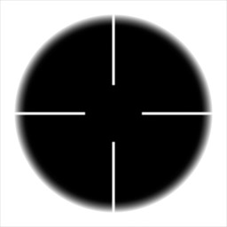
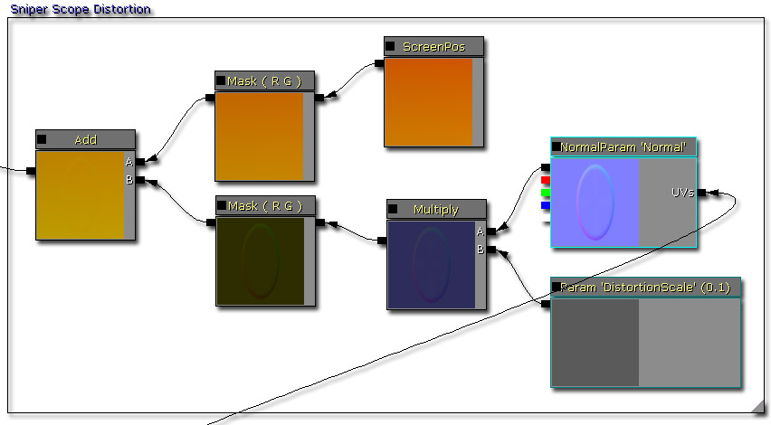
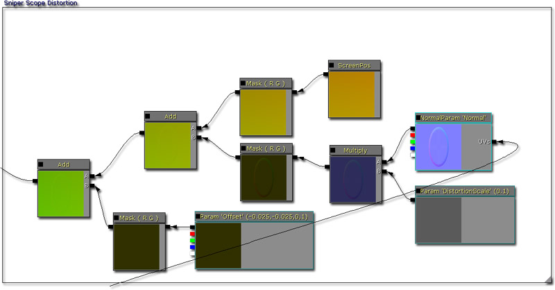
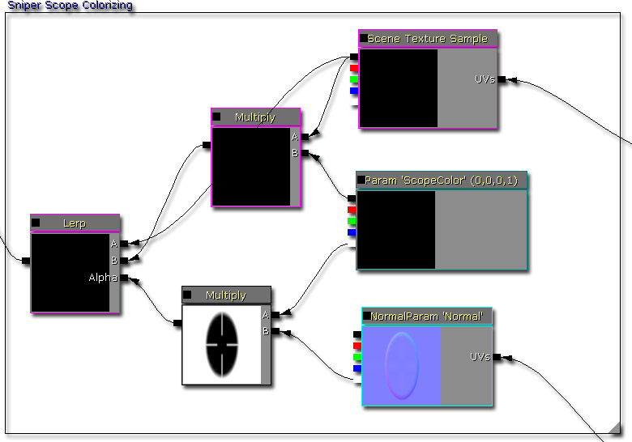
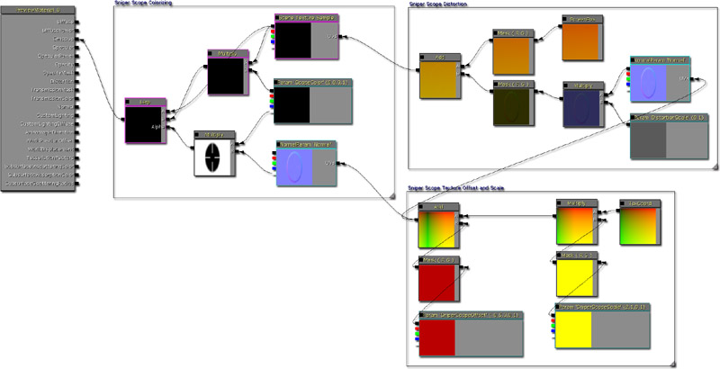
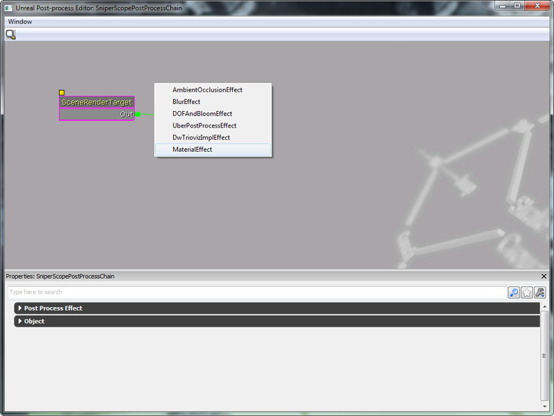
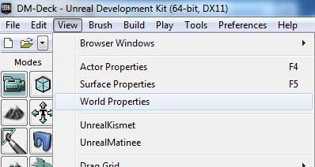
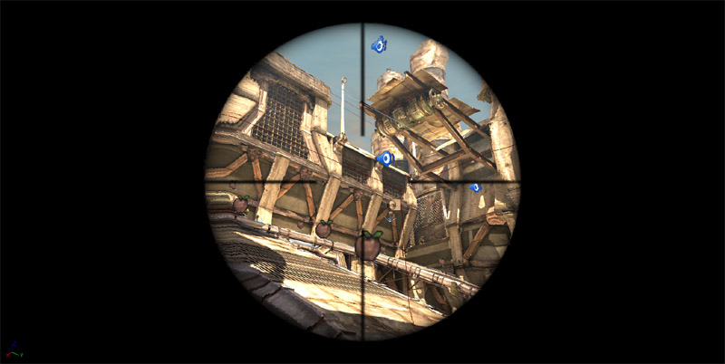

UDN
Search public documentation:
DevelopmentKitGemsHUDDistortionCH
English Translation
日本語訳
한국어
Interested in the Unreal Engine?
Visit the Unreal Technology site.
Looking for jobs and company info?
Check out the Epic games site.
Questions about support via UDN?
Contact the UDN Staff
日本語訳
한국어
Interested in the Unreal Engine?
Visit the Unreal Technology site.
Looking for jobs and company info?
Check out the Epic games site.
Questions about support via UDN?
Contact the UDN Staff
添加 HUD 变形
于 2011 年 6 月对 UDK 进行最后测试
可以与 PC 兼容
概述
向屏幕添加变形通常是为玩家提供反馈的真正好用的特效。它可能意味着这个玩家已经被某种武器击中，当前正在水下或者正在通过狙击瞄准镜浏览。在这篇开发工具包精华文章中，以狙击瞄准镜为例。
后期处理
虚幻引擎 3 可以将它的屏幕输出存储在一个允许您使用后期处理进行修改的渲染目标中。因为将它存储在渲染目标中，所以使用 Material 系统修改这个渲染目标。请参阅后期处理特效，更确切地说是后期处理材质。
设置材质
贴图
开始需要准备一些贴图。贴图存储在 UI LOD Group（UI LOD 组）并将 Address X 和 Address Y 设置为 Clamp（限定值）。 变形的法线贴图。 不透明度的 alpha 贴图。
不透明度的 alpha 贴图。

狙击瞄准镜贴图坐标
对于狙击瞄准镜，不可以将贴图拉伸超出整个屏幕范围之外。理想情况下，您会希望狙击瞄准镜位于屏幕中间，并将其限制在 1:1 长宽比。可以通过调整贴图坐标在材质中实现这种情况。
- 叠加贴图坐标可以根据百分比调整贴图的比例。例如，0.5 就是贴图的 50% 而 2.0 是贴图的 200%。
- 添加到贴图坐标可以根据百分比调整贴图的位置。这与屏幕上的贴图位置不同，而是在首次使用这个贴图时在贴图中开始看的地方。通常它就是 0，但是调整它可以使您在贴图上平移，选择其他可以开始绘制的像素。在我们的实例中，因为该贴图限定了它的 Address X 和 Address Y，所以它会在屏幕上转换这个贴图，然后在边缘产生黑色的部分，这对于狙击瞄准镜来说是理想情况。
狙击瞄准镜变形
为了营造‘代入’感，需要稍微变形才能看到狙击瞄准镜的弯曲部分。进行这项操作的方法是调整 Scene Texture Sample（场景贴图样本）贴图查找坐标。通过与法线贴图合成，还可以同时调整变形的长度。
- 将法线贴图与标量参数合成使您可以轻松调整变形长度。

狙击瞄准镜着色
完成贴图偏移和变形后，应该将所有内容组合到一起。通过使用不透明贴图在两个版本的 Scene Texture Sample 之间进行线性插入，可以很容易地在屏幕上创建狙击瞄准镜模式。
- 通过调整 ScopeColor 的 RGB 值更改狙击瞄准镜覆盖层的颜色。
- 通过调整 ScopeColor 的 alpha 值更改狙击瞄准镜覆盖层的长度。
完整的材质

创建一个简单的后期处理链
后期处理链是虚幻引擎 3 用来处理后期特效的工具。使用诸如树形结构的节点将效果一个接一个地连接在一起，这样可以使设计师轻松地通过结合其他后期特效模块创建新的后期特效。有关该系统的更多信息，请参阅后期处理编辑器用户指南和后期特效参考指南。

要测试这个材质效果，可以在内容浏览器中左击 New（新建）按钮创建一个新的 Post Process Chain（后期处理链）。 创建后期处理链之后，在内容浏览器中双击它的图标，打开后期处理编辑器。右击空白处，然后从出现的关联菜单中选择 Material Effect（材质特效）。这样将会创建一个新的 Material Effect（材质效果）后期处理节点。
创建后期处理链之后，在内容浏览器中双击它的图标，打开后期处理编辑器。右击空白处，然后从出现的关联菜单中选择 Material Effect（材质特效）。这样将会创建一个新的 Material Effect（材质效果）后期处理节点。

在 Material Effect（材质效果）后期处理节点上进行选择，然后将 Material（材质）字段设置为上面创建的 Sniper Scope（狙击瞄准镜）材质。
修改 Unrealscript 中的材质参数
正如在这篇开发工具包精华文章的材质创建部分中提到的那样，这里有一些变量需要进行调整。为了能够在后期处理链中查找并引用 Material Effect（材质效果）节点，您将需要为这个 Material Effect（材质效果）节点命名。后期处理编辑器中的操作过程如下所示：

var MaterialInstanceConstant SniperPostProcessMaterialInstanceConstant;
function PlayerTick(float DeltaTime)
{
local MaterialEffect SniperPostProcessEffect;
local LocalPlayer LocalPlayer;
local LinearColor LC;
Super.PlayerTick(DeltaTime);
if (SniperPostProcessMaterialInstanceConstant == None)
{
Super.PlayerTick(DeltaTime);
// 获取 local player，它可以存储后期处理链
LocalPlayer = LocalPlayer(Player);
if (LocalPlayer != None && LocalPlayer.PlayerPostProcess != None)
{
// 获取后期处理链材质效果
SniperPostProcessEffect = MaterialEffect(LocalPlayer.PlayerPostProcess.FindPostProcessEffect('SniperScope'));
if (SniperPostProcessEffect != None)
{
// 创建一个新的材质实例常量
SniperPostProcessMaterialInstanceConstant = new () class'MaterialInstanceConstant';
if (SniperPostProcessMaterialInstanceConstant != None)
{
// 将材质实例常量的父代赋给存储在材质效果中的材质实例常量
SniperPostProcessMaterialInstanceConstant.SetParent(SniperPostProcessEffect.Material);
// 设置材质效果，使其使用最新创建的材质实例常量
SniperPostProcessEffect.Material = SniperPostProcessMaterialInstanceConstant;
// 调整瞄准镜颜色
LC.R = 1.f;
LC.G = 0.f;
LC.B = 0.f;
LC.A = 1.f;
SniperPostProcessMaterialInstanceConstant.SetVectorParameterValue('ScopeColor', LC);
}
}
}
}
}

下载

- 下载该开发工具包精华文章中使用的内容。

{kind=link}